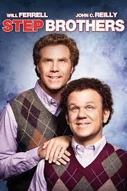

| Movie | Synopsis | Cast/Directors | Movie Review | Audience Score |
|---|---|---|---|---|
| An American cop and his murder mystery loving wife go on a vacation to fullfill a promise that he made, but get caught up in the murder of a billionare and have to solve the case before they are punished for a crime they didn't commit.
Duration 1h 37m |
Cast:
Adam Sandler, Jennifer Aniston, Luke Evans Director:Kyle Newacheck Writer:James Vanderbilt |
The Guardian
A surprisingly nimble summer comedy that finds both Aniston and Sandler at their most charming. The New York TimesAniston and Sandler have a goofy, relaxed rapport that is often amusing despite the film’s best efforts to smother any sign of verve. |
IMDb
6/10 Rotten Tomatoes46% Metacritic5.4/10 |
|
|  | Two grown men are forced to live together due to their parents' marriage, and eventually have to learn how to grow up
Duration 1h 38m |
Cast
Will Ferell, John C. Reilly, Mary Steenburgen, Richard Jenkins DirectorAdam Mckay WritersWill Ferell, Adam Mckay, John C. Reilly |
New York Post
There is too much funny here for a movie (even though it continues into the closing credits). Step Brothers should be a TV show. The New York TimesThey're losers that only a mother, an entertainment manager or a gang of self-satisfied comedy insiders could love. |
IMDb
6.9/10 Rotten Tomatoes69% Metacritic8.1/10 |
| An old man named Otto is planning on killing himself, however several failed attempts, and the needs of his neighbors lead him down a path that will affect everyone around him. Duration 2h 6m |
Cast
Tom Hanks, Mariana Treviño, Manuel Garcia-Rulfo, Rachel Keller DirectorMarc Forster WriterFredrik Backman, Hannes Holm, David Magee |
The Playlist
It’s rare that we need two of essentially the same film, rarer than rare, but “A Man Called Otto” has earned a space in the list of worthy remakes for its big heart and emotionally charged performances that don’t skimp on the comedy. The GuardianHanks carries the film with his personality and his easy address to the camera, but this oddity of a film never quite comes to life. |
IMDb
7.5/10 Rotten Tomatoes97% Metacritic6.8/10 |